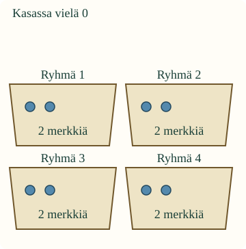
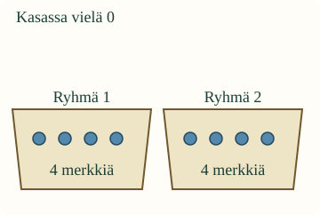

Montako ryhmää tulee?
Loikalla on 8 pelimerkkiä. Pakkausohje sanoo: laita aina 2 merkkiä yhteen ryhmään. Kuinka monta tällaista ryhmää koko kasasta saa?
Tavoitteesi: muodosta annetun kokoisia ryhmiä ja selvitä ryhmien määrä.
Kokeile oikeilla merkeillä
Ota 8 laskumerkkiä. Siirrä kaksi erilleen yhdeksi ryhmäksi. Tee seuraavat samanlaiset ryhmät jäljellä olevista merkeistä. Lopeta, kun kasa on tyhjä. Laske nyt ryhmät.
Yhden ryhmän koko on jo annettu: 2 merkkiä. Ryhmien määrää emme vielä alussa tiedä.
Esimerkki: kaksi jokaiseen

Kasasta syntyy 4 ryhmää, joissa kussakin on 2 merkkiä. Vastaus kysymykseen ”montako ryhmää” on 4.
Tämän voi merkitä 8 : 2 = 4. Tässä 8 on koko merkkimäärä, 2 on yhden ryhmän koko ja 4 on ryhmien määrä. Luku 2 ei tässä kerro valmiiksi ryhmien määrää.
Sama kasa, eri ryhmän koko

Kun ohje onkin 4 merkkiä ryhmään, samoista 8 merkistä tulee 2 ryhmää. Isompia ryhmiä tarvitaan vähemmän. Koko kasan määrä ei muuttunut.
Ansakohta: ryhmän koko vai ryhmien määrä?
Ensimmäisessä esimerkissä vastaus ei ole 2 eikä 8. Kaksi on yhden ryhmän merkit ja kahdeksan kaikki merkit. Kysyttiin, montako kahden merkin ryhmää tulee. Siksi vastaus on 4 ryhmää.
Ennusta: tuleeko 12 merkistä enemmän kahden vai neljän merkin ryhmiä? Kokeile samoilla merkeillä tai selitä kuvan avulla.
Avaa perustelu
Kahden merkin ryhmiä tulee 6, neljän merkin ryhmiä 3. Pienempiä ryhmiä mahtuu samaan määrään enemmän. Jokaisessa omassa jaossa ryhmät ovat yhtä suuria.
Muodosta ryhmät mallissa
Uusi tilanne: parit
Pöydällä on 6 samanlaista korttia. Kerää aina 2 korttia yhdeksi pariksi. Saat 3 paria. Esine vaihtui, mutta ajatus on sama: tiedät yhden ryhmän koon ja selvität ryhmien määrän.
Apua ryhmien laskemiseen
Katso ensin pakkausohjetta: montako merkkiä kuuluu yhteen ryhmään? Tee yksi sellainen ryhmä kerrallaan. Tarkista, jäikö kasaan vielä merkkejä. Kun koko kasa on ryhmissä, laske ryhmät. Voit purkaa ja tehdä uudelleen. Merkkejä ei tarvitse nimetä ääneen.
Tutki lisää: entä jos yksi jää yli?
Seitsemästä merkistä saat kolme täyttä kahden merkin ryhmää ja yksi merkki jää ulkopuolelle. Yksittäinen merkki ei ole uusi täysi kahden ryhmä. Se kuuluu kertoa erikseen. Yllä olevat ruudun tehtävät menevät kaikki tasan.
Opettajalle: sisältöjaon merkitys ja rajat
Vuosiluokat 1–2; käsite ja kanoninen atomic-rooli säilyvät. Sisältöjaossa kokonaismäärä ja yhden ryhmän koko tunnetaan, ryhmien määrä etsitään. Ainoa pakollinen esitietoryhmä on M-NUM-02. M-MUL-01 on vahvaa tukea, ei avausportti. Ositusjakoa ei lisätä pakolliseksi esitiedoksi.
Oppilas muodostaa mallin täydet ryhmät ja kertoo ryhmien määrän. Painike tekee annetun kokoisen ryhmän automaattisesti: oppijan ei tarvitse suorittaa ylimääräistä yksittäisten esineiden napauttelua. Tästä ei päätellä itse valittua ryhmittelystrategiaa tai fyysistä käsittelyä. Korjaaminen ja avun käyttäminen on sallittua.
Offline: käytä 6, 8 tai 12 samanlaista laskumerkkiä ja anna ryhmän koko. Anna oppilaan ryhmitellä koko määrä sekä osoittaa yhden ryhmän koko ja kaikkien ryhmien määrä erikseen. Säilytä koko kasa samana, kun vertailet kahden ja neljän ryhmiä. Ruudun valinnat eivät todenna oikeiden esineiden ryhmittelyä tai itsenäistä toimintaa.
Kokonaiset täysikokoiset ryhmät ovat ydin. Ylijäämä on valinnainen keskustelu, ei ydintarkistuksen jakojäännösvaatimus. Murtoluvut, jakaminen nollalla ja muodollinen laskualgoritmi eivät kuulu arviointiin. Ei vastauksien tallennusta, pisteitä, hallintamerkintöjä tai oppimisvaikutuksen väitettä. Aikuinen saa lukea ohjeet; puheen vahvistamista ei tarvita.
Lopuksi
Kun 8 merkkiä ryhmitellään kahden ryhmiksi, mitä tiedät alussa ja mikä pitää selvittää? Näytä yhden ryhmän koko ja laske sitten ryhmät.